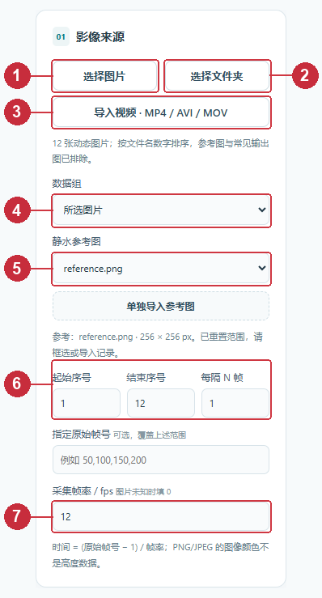
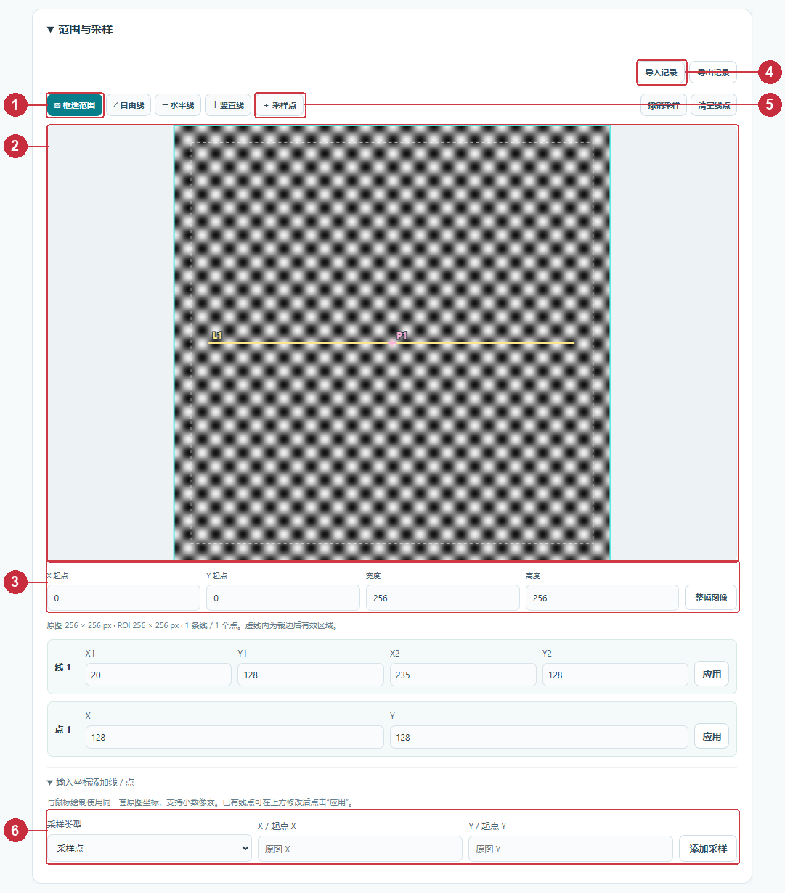
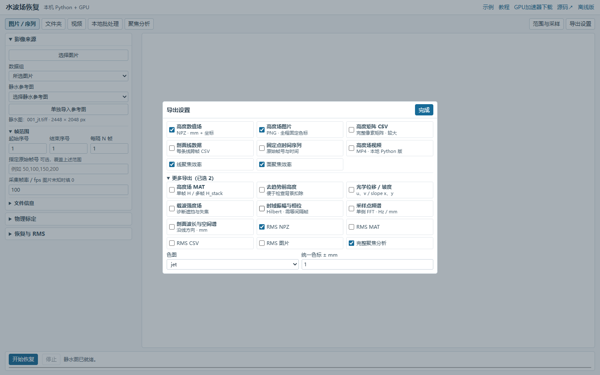

从原始影像到聚焦结果
按实际按钮逐步操作。截图红色编号对应操作位置，点击截图可查看原尺寸；示例使用合成影像和教学文件名，不代表真实实验结果。
先选择要做的任务
页面顶部按任务分为“图片／序列”“文件夹”“视频”“本地批处理”和“聚焦分析”。先点击其中一项，再在展开的操作区导入数据。物理标定、恢复参数和采样设置以折叠分组显示，点击标题即可展开；收起分组不会清除已填写的参数。
高度场、图片、CSV、采样线、采样点、视频以及线／面聚焦效率直接显示在“选择导出内容”中。其余项目在“更多导出”里，标题会显示其中已勾选的数量。导入静水参考图后，“范围与采样”会自动展开。
准备哪些数据
| 输入 | 含义和用途 |
|---|---|
| 静水参考照片 | 没有水波时的棋盘格，常见名称为 jt.tiff。用于计算水波图像相对于静水图像的格纹位移；每次原始影像恢复都需要。 |
| 有波带片动态图／视频 | 波传播和聚焦时的原始棋盘格影像。用于恢复每帧的水面高度，并计算各位置随时间变化的均方根（RMS）。 |
| 无波带片动态参考 | 移除波带片、保持对应激励工况采集的波场，或其 RMS 文件。用于计算有、无波带片之间的增益比值；恢复格纹位移时仍需静水照片。 |
本教程中的常用术语
工况指一组实验条件，例如水深 30 mm、频率 6.2 Hz、激励振幅 0.5 V。有片／无片分别指安装／未安装波带片。ROI是选中的图像处理区域。RMS是均方根，用于表示各位置的水面起伏强度；锁相分析只提取指定频率的振动分量。各项计算和参数在对应章节中说明。
使用示例完成一次恢复
- 在工具页右上角点击 “试用合成波场”，等待示例就绪。
- 点击中部 “开始恢复波场”。首次联网使用时需要下载计算所需的组件，随后标签页显示恢复进度。
- 完成后点击显示结果文件名的下载按钮（例如 “下载 demo_results.zip”），查看 ZIP 内的高度与图片。
- 滚动到 “RMS 与聚焦” 可看到该次 RMS；按第 12 节选择焦点。
示例按钮会设置合成数据专用的水深、帧率、去趋势和采样点。真实实验前重新核对参数，不要照搬示例设置。
02 导入图片序列

- 点击顶端 ①“图片／序列”，再点击操作区的 “选择图片”，用系统文件窗口的 Ctrl／Shift 多选同一次实验的照片，点击“打开”。
- 检查 ④“数据组”。照片按文件名数字自然排序，2 会排在 10 前面。
- 在 ⑤“静水参考图” 下拉框选真实静水照片。若它不在本批文件中，点击 “单独导入参考图” 另选 jt.tiff 等文件。
- 核对参考名称、尺寸和预览。选作参考的照片将从动态图中排除。
- 展开 “帧范围”，在 ⑥起始序号、结束序号、每隔 N 帧 设置处理范围。第一次可先处理一小段检查参数。
- 在 ⑦“采集帧率 / fps” 填真实拍摄帧率，例如 100；不是期望的导出播放速度。
- 按第 05 节框选、按第 08 节核对标定，勾选导出项目。
- 点击 “开始恢复波场”，结束后下载结果。
编号、帧范围与时间
“选择图片”和“选择文件夹”支持不同位数的数字编号，例如 wave_001.tiff、wave_0001.tiff、wave_00001.tiff。原始帧号取去掉扩展名后、文件名末尾的数字；没有数字时用列表顺序。不同实验有重复编号时，应分组处理。
“起始／结束序号”指排序后的第几张动态图，不是文件名编号。例如文件编号 0050、0100、0150，起始序号 2 表示从 0100 开始。需要直接指定编号时，在“指定原始帧号”填 50,100,150；填写后将优先使用这些帧号，而不再使用起始、结束序号，不使用时清空。
从 1 编号的序列按 t=(原始帧号−1)/fps 计算时间；有第 0 帧时采用零起点。缺帧后不要重新编号成连续帧，否则时间分析会失真。帧率未知可以填 0，但锁相分析、Hilbert 变换和频谱分析需要正确的帧率与时间信息。
支持 PNG、JPEG、TIFF、BMP、WebP 等。16 位灰度 TIFF 保留精度；多页 TIFF 只读取第一页，请先整理为逐帧文件。输入应是原始格纹照片，不能用伪彩色高度图代替。
03 通用文件夹导入
- 先点击顶端 “文件夹”，再点击“影像来源”内的 “选择文件夹”，在系统窗口选目录并确认。
- 等待识别。图片按所在子目录分组，视频各自作为独立数据组。
- 点击 “数据组” 下拉框选择这次要处理的组。此方式每次只处理当前选中的数据组；需要处理其他组时，请在完成后切换。
- 核对 “静水参考图”。jt、ref、reference、static、静水等开头的文件可被识别为参考候选；006_jt.tiff 这类名称请手动确认。
- 填写帧范围、帧率与标定，框选后点击 “开始恢复波场”。
- 下载结果，再切换下一组；每次切换数据组都要检查静水参考图。尺寸相同不代表实验工况相同。
通用“选择文件夹”不直接向源目录写结果。要按实验条件归类并依次处理重复实验、写入本地目录，请使用本地实验数据批处理。
04 视频与抽帧
- 先点击顶端 “视频”，再点击 “导入视频 · MP4 / AVI / MOV” 选一个视频，或在文件夹数据组中选视频。
- 等待视频信息出现。AVI 首次需加载解码器；完整离线包已包含它。
- 点击 “单独导入参考图”，选同尺寸、同机位、对应工况的静水照片。
- 核对 “采集帧率 / fps”。AVI 从文件读取帧率；通过“导入视频”选择的其他格式经浏览器抽帧时，需要手动核实数值。
- 设置起始序号、结束序号、每隔 N 帧。例如 1／100／2 会选择第 1、3、5……99 帧。
- 框选、核对标定、勾选输出，点击 “开始恢复波场”。
停止与部分结果
点击 “停止并保留已完成帧”，程序等待当前帧结束再保存。通用模式可下载已完成部分的 ZIP 压缩包；严格模式保留已经保存到目录的文件。不要直接关页代替停止。manifest.json 会记录是否部分完成。
格式与帧率限制
相同 AVI 扩展名可能包含不同编码。严格批处理使用 FFmpeg WASM；离线版包含常用视频解码组件。遇到不支持编码、缺少可靠帧数或无法确认恒定帧率，应导出图片序列或转换为兼容的恒定帧率视频，不能只改扩展名或随意改 fps。
网页版和便携离线版不提供 OpenCV 的 MP4 高度场视频导出。它们仍支持高度图片、数值和时间分析；另行启动 Python 服务的本地版才启用该 MP4 导出项。
05 框选范围

鼠标框选
- 先导入静水照片，确认画布已有图像。
- 点击 ①“框选范围”。
- 在 ②画布 从区域一角按住鼠标拖到对角，再松开。
- 检查外框与虚线。外框表示选中的处理区域（ROI），虚线表示去除边缘后的输出范围。
- 在 ③数值栏 确认 X 起点、Y 起点、宽度、高度。
输入精确坐标
- 填写 “X 起点”“Y 起点”，以原图左上角为 (0, 0)，X 向右增大、Y 向下增大。
- 填写整数 “宽度”“高度”，至少各 64 px，且不能越界。
- 按 Tab 或点其他字段使输入生效，检查边框。
- 要恢复全图，点击 “整幅图像”。
例：X=100、Y=50、宽=400、高=300，对应 [100,50,500,350)，右、下边界不包含。默认每侧再裁 10 px，输出为 380×280。遮挡掩膜（标记无效像素的区域）还会排除部分像素，虚线内不一定全部有效。
改变 ROI 后采样线和采样点不会自动移动，需检查是否仍在输出范围内。做有片／无片比较时，保持机位、ROI 与尺度一致。
06 采样线与采样点
用鼠标添加
- 点击工具栏 “采样点”，再在有效范围内点击目标位置。
- 要取任意剖面，点击 “自由线”，从起点拖到终点。
- 要取完整有效范围的水平线，点击 “水平线”，再在目标 Y 位置点击；竖直线则点 “竖直线” 后选择 X。
- 检查画布 P1、L1 等标记及下面的坐标列表。
精确输入与修改
- 展开 “范围与采样”，再展开 “输入坐标添加线 / 点”，在“采样类型”选类型。
- 点填 X/Y；自由线填两端 X/Y；水平线只填 Y；竖直线只填 X。
- 点击 “添加采样”。小数像素也支持，使用双线性采样。
- 修改已有对象时，在对应行改数值，再点该行 “应用”。
- 撤销刚添加对象点 “撤销采样”；全部重建点 “清空线点”。
选择对应的导出项目
画线后勾选 “剖面线数据”；选点后勾选 “固定点时间序列”。需要额外分析时再勾选“采样点频谱”或“剖面波长与空间谱”。仅画采样线和采样点不会自动生成对应 CSV。
这些点是逐帧高度采样点，不是“RMS 与聚焦”面板的焦点。后者使用物理坐标 cm，需单独选择。
07 保存、导入选区记录
保存
- 完成参考图、ROI、采样线和采样点、标定和导出设置。
- 点“范围与采样位置”右上角 “导出记录”。
- 保存 water-wave-selection.json，可按机位／工况另改文件名。
复用
- 先导入下一组的静水参考图。
- 点 “导入记录”，选择保存的 JSON。
- 核对选框、采样线和采样点、物理参数、导出勾选，以及严格模板和焦点。
- 严格模式还需重新选择目录并授权；记录不保存浏览器目录权限。
当前记录为 v2，图像尺寸必须完全相同，不会缩放旧坐标。旧 v1 记录会启用旧版算法并保留旧参数；要升级，导入后把“恢复与 RMS → 算法”改为“最终版3”，重新确认遮挡／标定开关，再导出新记录。
批处理在运行目录保存 selection.json。焦点分析后的 focus.json 仅记录焦点与分析设置，不能当成完整选区记录导入。
08 物理与经验标定

- 展开 “物理标定”，填写实际水深、底板厚度、方格边长。
- 没有独立尺度标定时，“手动 mm/pixel”保持 0；有标尺结果时填入，覆盖自动估计。
- 点击 “折射率与算法参数” 展开，检查折射率、边缘裁剪、积分算子和相位展开。
- 在 “高度背景处理” 选择去趋势。首次打开时默认去二次曲面；需要检查背景扣除时同时勾选“去趋势前高度”。
- 展开 “恢复与 RMS”，核对算法、坐标标定和位移标定两个独立开关。
- 展开其中的 “经验标定”，核对高度系数和标定参数，再运行恢复。遮挡阈值和区域尺寸集中在 “遮挡参数” 中。
| 字段 | 默认值 | 修改依据 |
|---|---|---|
| 水深 | 30 mm | 实际水深；严格模式从文件名识别出水深后，使用对应实验的水深。 |
| 底板厚度 | 10 mm | 透明底板实测厚度。 |
| 方格边长 | 1.5 mm | 棋盘格单格实际边长，不是像素格宽。 |
| 水／底板／空气折射率 | 1.33／1.49／1.00029 | 材料与实验标定。 |
| 边缘裁剪 | 10 px | 边缘污染与复现实验需要。 |
| 载波滤波半径系数 | 1 | 控制提取格纹信号时的滤波范围。减小可抑制部分噪声，但也可能丢失波场细节；建议先保留默认值，再对少量帧比较结果。 |
| 二维相位展开 | 开启 | 处理相位跨越 ±π 时的不连续。通常保持开启。 |
| 去掉平均图像位移 | 开启 | 在积分前去除整幅图的平均光学位移，减少整体平移的影响；也会去除对应的平均坡度分量。 |
| 时域计算内存预算 | 256 MiB | 限制 Hilbert 分析所保存的逐帧高度数据量，不是浏览器总内存上限。数据过大时可缩小选区、减少帧数，或在设备内存允许时提高预算。 |
| 积分算子 | 有限差分 | 沿用原 fftinvgrad2；明确需要时才改为谱导数。 |
| 高度系数 | 1 | 额外高度标定；系数乘在 H 上，增大后恢复高度减小。 |
| X／Y 斜率 | 1.022／1.020 | 根据本次实验的标定结果填写。 |
| X／Y 截距 | 0.04／0.05 cm | 根据本次实验的标定结果填写。 |
| 斜率／截距不确定度 | 0.001／0.02 cm | 对应标定误差估计，用于误差输出。 |
两个开关分别改变什么
坐标标定修正物理坐标：x真=(x测−0.04)/1.022、y真=(y测−0.05)/1.020，单位 cm。位移标定在积分前修正 u/v。两者可独立关闭；不使用这套经验标定时应调整参数或关闭对应开关，不能靠修改真实水深补偿。
最终版3物理坐标沿用 MATLAB 保存 RMS 的约定，从保留区域的第一个像素尺度起算，再通过经验标定公式换算。因此有坐标偏移时，以结果的 x_mm/y_mm 或 X_cm/Y_cm 为准，不要直接把原图像素 X 乘尺度当作输出 X。
高度计算
scale = |kr + ku| × 方格边长 / (2π)
heff = 水深 + 底板厚度 × n水 / n底板
H = 高度系数 × heff / scale × (1 − n空气 / n水)
height_mm = inverse_gradient(−u, −v) / H × scale其中 kr、ku 是从棋盘格中识别出的两个载波波矢；scale 是每个像素对应的实际长度（mm/pixel）；heff 是折射模型中的有效光程厚度；H 是位移到坡度的换算系数。inverse_gradient 表示对二维梯度进行积分。
高度是去趋势后的相对高度，不是绝对水位。u/v 是格纹光学位移，不是流体质点位移。去平面会削弱整体倾斜，去二次曲面还会削弱真实长波及大尺度起伏。
09 遮挡、时间 RMS 与锁相
遮挡处理
- 在“恢复与 RMS”保持算法为 “最终版3”，勾选 “遮挡处理”。
- 先选择少量帧进行恢复，查看高度预览和导出的 RMS／掩膜；灰色代表无效，不是零高度。
- 若正常格纹被大片排除，检查曝光、格纹周期，再按下表调整参数并重新恢复。
| 字段 | 默认 | 含义 |
|---|---|---|
| 暗阈值 | 0.25 | 乘参考亮度 P90；提高会排除更多暗像素。 |
| 调制阈值 | 0.30 | 乘局部标准差中位数，排除缺乏格纹区域。 |
| 过曝阈值 | 1.01 | 乘参考最大灰度，默认基本不启用过曝排除。 |
| 统计窗口 | 21 px | 局部调制窗口，需包含足够的格纹周期。 |
| 最小区域 | 100 px | 忽略小于该面积的零星无效斑点。 |
| 扩张／保护带 | 2／10 px | 扩大遮挡周围排除范围，减少滤波污染。 |
| 填充环 | 20 px | 用静水参考图的周围格纹拟合计算性填充。 |
程序会对被遮挡区域进行格纹填充和位移插值，以提高计算稳定性，不代表测到了遮挡下的真实水面。最终高度与 RMS 仍保留无效掩膜。默认保护带和边缘裁剪不完全重合，输出边缘少量灰色可能正常。
普通 RMS
- 勾选需要的 “RMS NPZ”“RMS MAT”“RMS CSV”“RMS 图片”。
- 设 “有效帧比例”，默认 0.8；有效样本不足所处理帧的 80% 时，该像素被排除。
- 不勾选 “锁相”，开始恢复。
每像素计算 Z=√mean(h²)，没有再次减掉时间均值；dZ 是根据有效样本和四阶矩估计的统计标准误差。它不同于 summary.csv 中每帧的空间 RMS，也不同于 Hilbert 包络。
指定频率锁相
- 先填写正确的采集帧率（fps），确保编号反映真实时间。
- 输入 “频率 / Hz”，勾选 “锁相”。
- 选择覆盖足够振动周期的数据，开始恢复。
锁相拟合该频率的正余弦与常数项，以幅值除以 √2 输出 RMS，并计算对应不确定度。严格模式解析到频率时，使用各工况自己的频率。普通 RMS 的 Z 值由高度序列直接计算，但频率仍用于波长、群速度和波陡分析。
10 本地实验数据批处理

- 先点击顶端 “本地批处理”，再点击 ①“选择本地实验数据目录”。
- 点击“选择本地实验数据目录”，在浏览器请求读写权限时允许。目录名会显示在按钮下方，右侧的 × 可以解除关联；结果将写入该目录的 results 子目录。
- 在 ②“变量” 选水深、频率或振幅。振幅是实验激励或目标水面振幅的文件名变量，不是恢复后的波高；单位默认 mm，也可以按文件名改成其他单位。
- 在 ③“实验格式”“静水格式” 输入相对路径模板。实验模板必须含 {run} 和当前所选变量。
- 模板未包含的固定值来自主界面的水深、频率与本面板振幅；逐项确认。
- 在 ④“重复次数” 填 0 使用全部；填 N>0 时使用按原始编号数值排序的前 N 次。
- 展开 “帧范围”，设置批处理专用的 “起始序号”“结束序号”“间隔”。这里结束序号 0 表示直到最后一帧，与“影像来源”中设置的帧范围独立。
- 准备了无波带片参考数据时，展开 “无波带片参考”，点击 ⑤“选择本地参考场文件目录”，再设置目录模板，见下一节。
- 点击 ⑥“识别”，检查列表。缺少参考、匹配不唯一、重复帧号等问题先修正，再识别。
- 识别会加载首个可处理实验的静水图。在主画布框选、添加采样线和采样点，并核对标定参数，或导入记录。
- 勾选导出内容，点击 ⑦“处理”。程序再次识别目录，再逐次恢复。选择已有结果目录时会显示“继续”，可复用已完成的 RMS。批处理的逐帧高度、图片、线点数据和 RMS 会直接保存在本地结果目录。
- 完成后在“RMS 与聚焦”的工况下拉框逐个选工况，手动保存焦点并分析。
命名变量
| 写法 | 含义 |
|---|---|
{run} | 实验编号。保留文件名中的原编号，并按数值大小排序。 |
{frame} | 图片序列帧号。 |
{depth}／{freq}／{amp} | 水深 mm／频率 Hz／激励振幅，支持小数。 |
{ext} | 扩展名，取自“文件扩展名”逗号列表。 |
{run:04d}／{frame:05d} | 至少四位实验编号／至少五位帧号；不限制编号位数时，使用 {run} 或 {frame}。 |
按表中的占位符填写文件名格式；子目录之间用 /，路径必须在所选目录内。
可以照着修改的例子
| 实际文件 | 实验格式 | 静水格式 | 变量 |
|---|---|---|---|
| 006_20mm.avi 006_jt.tiff | {run}_{depth}mm.avi | {run}_jt.tiff | 水深 |
| 30mm/0006_6.2hz.avi 30mm/0006_jt.tiff | {depth}mm/{run:04d}_{freq}hz.avi | {depth}mm/{run:04d}_jt.tiff | 频率 |
| 0.5V/006_frame_00001.tiff 0.5V/006_jt.tiff | {amp}V/{run}_frame_{frame:05d}.tiff | {amp}V/{run}_jt.tiff | 振幅 |
混用 tif／tiff 时，末尾写 .{ext}，扩展名列表填 tif,tiff；固定写 .tiff 就只匹配它。每个实验必须唯一匹配静水照片，存在多个匹配文件时，需要调整模板或目录，使对应关系唯一。
重复次数不足会怎样
设置 N=3，一个工况只有 2 次就用实际 2 次；有 4 次、编号 006／007／008／009 时取前三个，009 不使用。整批只显示一次通知，处理会继续进行，如“部分数据实际实验次数2次，小于设置次数3次”。有多个不足工况时显示最小实际次数，不会要求补齐后才能继续。
本地结果结构
所选根目录/results/本次运行目录/
selection.json
tasks.json
experiment_..._results/
源前缀_results.zip
RMS.npz
depth_..._freq_..._amp_..._results/
RMS.npz
工况_RMS_results.zip
…分析后增加焦点及汇总文件每次新建运行目录，扫描排除 results，不覆盖旧批处理。tasks.json 记录完成、部分完成与失败实验；失败项不自动补算，修正后重新运行。
11 无波带片背景比较
先点击顶端“聚焦分析”，打开“RMS 与聚焦”。已有 RMS 文件可直接导入；原始图片和视频的相关操作位于“恢复无波带片参考”折叠分组中。
参考需对应水深、频率、激励与物理坐标范围。原始无片影像仍需自己的静水图。无片 RMS 直接用于比较，不做遮挡模型补齐。
A．已有无片 RMS
- 在“RMS 与聚焦”点击 “无片 RMS”。
- 选择 MATLAB RMS .mat 或本工具 .npz。
- 确认面板出现参考文件名。
- 选待分析的有片工况，选焦点并点击 “分析”。
MAT 需有二维 Z（也识别 Z_rms／rms）和物理坐标。可同时提供 valid 有效掩膜；未提供时，程序将有限数值位置视为有效。缺少 dZ 时仍能读 RMS，但部分不确定度不可估计。支持 MATLAB v7 MAT，不支持 v7.3 HDF5、FIG 或截图。此处导入的是当前分析所用的共同参考，请自行确认实验条件一致；程序不会自动选择频率最接近的参考。
B．只有原始无片影像
- 先设置与有片实验相同的 ROI、物理与恢复参数。
- 点击 “无片静水图”，选择该实验静水照片。
- 点击 “无片图片／视频”，多选一次实验的图片或一个视频；也可点击 “无片文件夹”。目录中只有一个 jt／ref 等候选时会自动使用，否则单独选静水图。
- 展开“恢复无波带片参考”中的 “帧范围”，核对起始／结束／间隔，并填写采集帧率。这里与严格批处理共用一组范围设置。
- 点击 “恢复无片参考”，等待完成。
- 选择有片工况，保存焦点，再分析。
此方式用于处理单次实验。多工况和重复实验用下面的目录方式。单独恢复的共同参考仅在当前页面打开期间保留；需要长期复用时，可通过严格批处理保存无片 RMS.npz。
C．严格模式匹配多工况
- 点本地批处理中的 “选择本地参考场文件目录”，选参考根目录。
- 选择目录后，目录名会显示在按钮下方；需要更换目录时点击名称右侧的 ×，再重新选择。原始视频／图片填写 “无片实验格式”“无片静水格式”。
- 已有 RMS 则填 “无片 RMS 格式”，例如
{run}_{depth}mm_RMS.{ext}，并在扩展名列表包含 mat,npz。 - 点击 “识别”，确认后设置选区并点 “处理”。
同一工况和编号同时匹配原始参考与 RMS 会报匹配不唯一；选择只含目标来源的目录或调整模板。网格不一致不会自动缩放，请核对机位、ROI、尺度与标定。
未指定参考仍可恢复、算 RMS、拟合形状，但增益为空；指定的参考不兼容时会报错，需要修正后才能进行比较。
12 焦点与聚焦分析

- 先点击顶端 “聚焦分析”，在 ③“工况” 选择目标。已有外部结果时，用 ①“导入 RMS” 选 MAT／NPZ。
- 需要增益时先用 ②“无片 RMS” 导入参考文件；若只有原始影像，请按第 11 节先恢复参考。严格模式已配对的参考用于对应工况。
- 在 ④RMS 图 点击焦点附近，十字与 X/Y 更新并保存选择。
- 要精确选点，在 ⑤“X / cm”“Y / cm” 输入数值，点击 ⑦“保存焦点”。预填数值不等于已确认。
- 展开 “分析参数”，修改 ⑥搜索与积分参数，见下表。
- 在“选择导出内容”中勾选 “线聚焦效率”、“面聚焦效率” 中需要的项目，再点 ⑧“分析”。批处理会分别分析同工况各次实验和平均 RMS 场。
- 查看面板上的效率结果；其他指标可展开 “完整结果” 查看。通用模式下载分析 ZIP，严格模式写到各实验／工况目录。需要模型图、剖面图和拟合数值时，在“更多导出”中勾选 “完整聚焦分析” 后再分析。
- 需要保存当前工况的 RMS 文件时，点击 “导出 RMS”，下载的文件可在以后重新导入分析。
- 切换下一工况重新选点。想调整焦点，只需再分析，不必重做影像恢复。
| 字段 | 默认／用法 |
|---|---|
| X / Y | 每工况单独确认，必须在实际 RMS 范围内。 |
| 搜索半宽 | 2.5 cm，限定手动中心附近的峰值搜索和模型拟合的范围。 |
| 线长 | 3 cm，水平线增益的积分长度。 |
| 长全轴／短全轴 | 9／3 cm，是完整轴长，不是半轴。 |
| 模型补齐 | 默认开启；仅补有片积分椭圆内无效像素的模型 Z²，无片参考不补。 |
| 拟合方向 | 默认开启；取消后在“方向 / °”手工指定积分椭圆角度。 |
主要结果
| 结果 | 解释 |
|---|---|
| gaussian／supergauss／core_halo | 椭圆高斯、超高斯、窄核＋宽晕模型；按均方根误差（RMSE）最小选择模型；同时输出修正赤池信息准则（AICc），供比较拟合结果。 |
| center_cm／user_center_cm | 拟合中心／手动中心。 |
| FWHM | RMS 振幅剖面的半高宽，优先实测交点，无法得到可靠实测交点时使用模型估计；来源注明 measured 或 model。 |
| line_gain／area_gain | 同一线段／椭圆内有片 Z² 积分除以无片 Z² 积分。 |
| user_gain／fit_gain | 积分窗口放在手动／拟合中心；fit 不表示整片实测场都替换为模型。 |
| area_model_fraction | 有片椭圆内模型补齐比例，应与增益一起检查。 |
| EE50／80／90／95 | 在拟合窗口的有效区域内，用模型 Z² 扣除背景项后估算累计能量；这些半径分别包含该区域总量的 50%、80%、90%、95%。 |
| steepness | 按单频近似和色散关系计算波长、相速、群速，以及波陡 ak（振幅 a 与波数 k 的乘积）。 |
实测宽度扰动、拟合统计、坐标标定的不确定度分别保存。重复 RMS 采用幅值场算术平均，不是合并所有帧再算 RMS；一次实验没有可估计的重复间不确定度。增益是相对 Z² 比值，不是以 W 为单位的绝对功率或无限范围总效率。
13 导出与文件说明

- 在 “选择导出内容” 勾选项目；只需要 RMS 时可取消逐帧高度／图片。
- 导出采样数据前，先添加相应的采样线或采样点，时间分析还需要有效且适用的时间采样。
- 在 ⑦“色图” 中选择配色，默认 jet。可选 jet、hot、cool、gray、hsv、blue-white-red。再设 “统一色标 ± mm”，例如 0.5；它只影响图片，不截断数值。
- 在通用模式下点击 “开始恢复波场”，或在严格模式下点击 “处理”。
- 通用模式点击结果下载按钮；严格模式去源目录 results 查看。
- 聚焦仍需恢复后手动选点并点击 “分析”，焦点由用户确认。
| 项目 | 输出与单位 |
|---|---|
| 高度数值场 | height/*.npz：height_mm[y,x]、x_mm/y_mm、原图 origin_px、frame_id、time_s。 |
| 高度图片／矩阵 CSV | images/*.png／height_csv/*.csv；高度 mm，矩阵行=y、列=x。 |
| 去趋势前高度 | before_detrend/*.npz，用于检查背景扣除。 |
| 光学位移／坡度 | optical_displacement/*.npz，u_px/v_px 与无量纲 slope_x/y。 |
| 载波强度 | quality/*.npz，用于检查格纹信号质量，不能直接作为测量置信度。 |
| 剖面线／固定点 | line_N.csv／points.csv，原始帧号、时间、像素／mm 坐标、沿线距离和高度。 |
| Hilbert 振幅与相位 | temporal/amplitude_phase.npz，包络 mm、相位 rad，exp(−iωt) 约定；时间段有无效样本的像素排除。 |
| 点频谱 | point_spectrum.csv，单侧 Hz／mm；至少三帧、等间隔。 |
| 沿线波长与空间谱 | wavelength.csv、line_N_spatial_spectrum.csv；投影波长受线方向及长度限制。 |
| RMS NPZ／MAT | rms.npz／rms.mat：Z、dZ、valid、X_cm/Y_cm、配置，可重新导入。 |
| RMS CSV／图片 | rms_Z.csv 等、rms_Z.png／rms_dZ.png；Z/dZ 为 mm，坐标为 cm。 |
| 线／面聚焦效率 | line_gain.csv／area_gain.csv：按勾选项目输出，分别列出手动中心和拟合中心的结果；效率沿用有片／无片 Z² 积分比定义。 |
| 完整聚焦分析 | focal.json/csv、fit.npz、profiles/* 和诊断图；包含实测／模型剖面和两套中心指标。 |
| 批处理焦斑汇总 | focal-summary.json/csv、focus.json，分开记录逐次统计与平均场分析。 |
切换色图会更新当前高度场和 RMS 预览。高度图片、RMS 图片、时域振幅图、聚焦诊断图以及本地 Python 版视频均使用所选配色。NPZ、MAT 和 CSV 数值不受配色影响。已生成的恢复 ZIP 不会被重新着色；要更换其中的图片或视频，请先选色图再重新恢复。RMS 和聚焦结果可直接重新导出或分析。
manifest.json 保存版本、标定、ROI、帧列表、备注和部分完成状态；summary.csv 是逐帧统计。严格模式为后续分析另存 RMS.npz，即使未勾选“RMS NPZ”，也会保存这份分析用数据。
下载名采用源前缀 _results.zip：wave_00001.tiff → wave_results.zip，output.avi → output_results.zip。焦斑分析另生成带 focal 的结果文件。Hilbert 首尾存在边界效应，建议采集多个周期后检查并舍弃不可靠边缘时间段。
14 下载与离线运行
- 联网打开工具，点击顶栏 “下载离线版”。
- 选系统／架构：Windows x64、macOS Intel、macOS Apple Silicon、Linux x64 或 ARM64。
- 完整下载 ZIP 并 解压整个目录；不要只复制 HTML，也不要直接打开压缩包内部文件。
- Windows 双击
waterwave.exe；macOS 双击start.command；Linux 运行./waterwave。 - 浏览器将打开
http://127.0.0.1:随机端口/。未自动打开时复制启动器显示的地址。 - 现在可以断网，按相同步骤导入、恢复、授权目录和保存，无需安装 Python／Node。
- 用完关闭启动器终端，停止本机服务；只关浏览器不会关闭启动器。
严格目录读写建议使用当前 Chrome／Edge；不支持目录写入接口的浏览器仍可使用通用导入和下载。系统可能对未做操作系统代码签名的应用显示确认提示。
离线包仅含水波工具、运行依赖、教程、源码和许可，不含网站其他小工具。离线主页底部 “kotokowa · 在线版” 可在联网时返回网站。
原创代码为 MIT，保留作者版权和许可；第三方保留各自许可。provenance.json／provenance.sig 用于官方来源和文件完整性校验，不是 DRM，不撤回 MIT 的修改与再发布权利。查看发布公钥。
15 常见问题
| 现象 | 检查顺序 |
|---|---|
| 开始按钮不可用 | 先选静水图，确认当前组有动态图／视频并等待导入。严格模式使用自己的“处理”。 |
| 找不到载波 | 检查是否误用伪彩图、曝光／失焦、选区格纹周期是否足够，必要时缩小选区并核对掩膜阈值。 |
| 图像尺寸不一致 | 重新选同机位、同裁剪参考；程序不缩放定量输入。 |
| 大量灰色／NaN | 检查遮挡、保护带、阈值与有效帧比例；先小段测试，不要把 NaN 直接改为 0。 |
| 采样线和采样点超界 | 检查 ROI 和边缘裁剪，修改坐标后点“应用”或重画。 |
| 严格模式无匹配文件 | 核对根目录层级、子目录模板、扩展名、编号位数与所选变量；模板匹配相对路径。 |
| 重复次数不足 | 已使用实际次数继续，通知不会中断处理；确实要补数据时才补充文件并重新处理。 |
| 目录权限撤回／拒绝 | 重新点击目录按钮并授权；已写文件保留，不要假定刷新后权限一定自动恢复。 |
| AVI 解码失败 | 核对实际编码与恒定帧率，转为兼容视频或逐帧图片；只改扩展名无效。 |
| 参考网格不一致 | 检查 ROI、尺度、机位、水深和经验标定；用一致设置重新恢复。 |
| 没有增益 | 确认是无片动态参考而不是静水照片，并检查积分区有效数据和参考非零能量。 |
| 要求选择焦点 | 在当前工况 RMS 图点击，或输入 X/Y 后点“保存焦点”，每工况分别确认。 |
| 没有 Hilbert／频谱 | 至少三帧、等间隔、有效 fps；点频谱先选点。查看 manifest 处理备注。 |
| 内存或磁盘占用过高 | 缩小 ROI、增加间隔、取消逐帧 CSV／图片／完整的 Hilbert 振幅与相位数据。批处理会在每次实验完成后保存结果，但单帧尺寸仍影响内存。 |
| 离线仍加载失败 | 确认是完整离线 ZIP，全部解压并用启动器打开；浏览器“另存网页”不能代替离线包。 |
用已知平面、已知位移或独立波高测量验证自己的实验。合成测试与 MATLAB 公式对照不能替代真实实验精度评估。